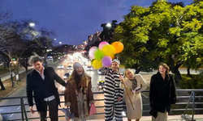
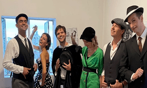
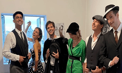
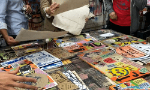
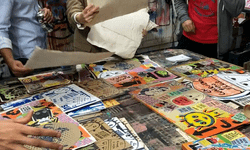
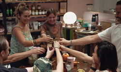
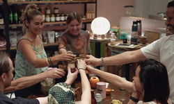
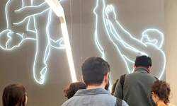
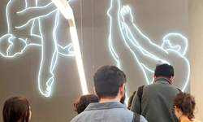

Tour del Terror
Saldremos caminando por las calles del barrio de Recoleta y nos detendremos en aquellos sitios con historias tenebrosas. Se las revelaremos... En algunos casos acompañados por ciertos personajes icónicos del escenario morboso de esta ciudad.
Ademas de las entretenidas historias pasaremos por los lugares mas emblemáticos del barrio: el Cementerio, Café La Biela, Facultad de Ingeniería, la Isla de Recoleta, Plaza Mitre, Biblioteca Nacional, Plaza Francia, la Facultad de Derecho y las pintorescas callecitas del barrio.

 

 


 

 
